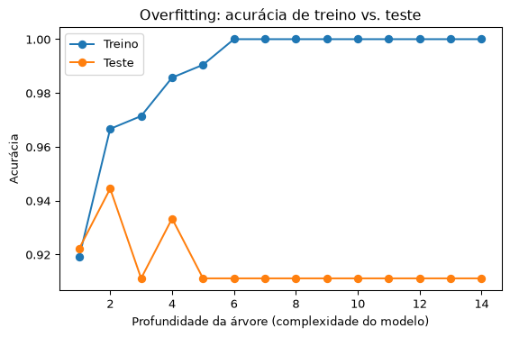

Machine Learning (aprendizado de máquina) é o ramo da Ciência de Dados dedicado a construir sistemas que aprendem padrões a partir de dados, em vez de seguir regras explicitamente programadas. Ao invés de escrever “se a idade for maior que X e a renda maior que Y, então classifique como cliente premium”, um modelo de ML aprende essa regra (e outras muito mais complexas) sozinho, a partir de exemplos.
Essa é a diferença fundamental em relação à programação tradicional: no lugar de Regras + Dados → Resultado, o Machine Learning inverte a lógica para Dados + Resultado → Regras.
Tipos de Aprendizado
Aprendizado Supervisionado: o modelo aprende a partir de exemplos rotulados (temos o “gabarito”). Divide-se em:
Regressão — prevê um valor numérico contínuo (ex: preço de um imóvel)
Classificação — prevê uma categoria (ex: e-mail é spam ou não)
Aprendizado Não Supervisionado: o modelo encontra padrões em dados sem rótulos (ex: agrupar clientes em segmentos via clustering)
Aprendizado por Reforço: um agente aprende por tentativa e erro, recebendo recompensas ou penalidades (ex: um agente jogando xadrez)
Este guia foca no aprendizado supervisionado, que é o ponto de partida mais comum.
Divisão em Treino e Teste
Um erro comum de iniciantes é avaliar um modelo usando os mesmos dados com que ele foi treinado — isso quase sempre superestima a qualidade do modelo, porque ele já “viu” as respostas.
A prática padrão é dividir os dados em dois conjuntos:
Conjunto de treino (geralmente 70-80% dos dados) — usado para o modelo aprender os padrões
Conjunto de teste (os 20-30% restantes) — usado apenas para avaliar o modelo em dados que ele nunca viu, simulando o uso real
Essa divisão é o que permite saber se um modelo vai generalizar bem para novos dados, ou se apenas “decorou” o conjunto de treino.
Overfitting e Underfitting
Underfitting (subajuste): o modelo é simples demais para capturar os padrões dos dados — erra tanto no treino quanto no teste.
Overfitting (sobreajuste): o modelo é complexo demais e “decora” até o ruído dos dados de treino — acerta quase tudo no treino, mas erra muito no teste, porque aprendeu particularidades que não se repetem em dados novos.
Ajuste ideal (bom generalização): o modelo captura o padrão real dos dados sem se apegar ao ruído — desempenho parecido (e bom) tanto no treino quanto no teste.
Esse equilíbrio é conhecido como o trade-off viés-variância (bias-variance tradeoff): modelos simples têm alto viés (underfitting), modelos complexos têm alta variância (overfitting).
Validação Cruzada (k-fold)
Dividir os dados uma única vez em treino/teste pode dar uma avaliação enganosa, dependendo de qual “sorte” caiu em cada conjunto. A validação cruzada k-fold resolve isso dividindo os dados em \(k\) partes (folds), treinando o modelo \(k\) vezes — cada vez usando uma parte diferente como teste e as demais como treino — e depois calculando a média do desempenho. Isso dá uma estimativa muito mais confiável da capacidade de generalização do modelo.
Métricas de Avaliação
Para regressão (variável numérica):
MSE (Erro Quadrático Médio): média dos erros ao quadrado — penaliza mais os erros grandes
RMSE (Raiz do MSE): mesma unidade da variável original, mais fácil de interpretar
R² (coeficiente de determinação): proporção da variância explicada pelo modelo (0 a 1, quanto maior melhor)
Para classificação (variável categórica):
Acurácia: proporção de previsões corretas sobre o total
Precisão: dos casos que o modelo previu como positivos, quantos realmente eram positivos
Recall (sensibilidade): dos casos realmente positivos, quantos o modelo conseguiu identificar
F1-score: média harmônica entre precisão e recall, útil quando as classes são desbalanceadas
Matriz de confusão: tabela que cruza previsões com valores reais, mostrando acertos e os dois tipos de erro (falsos positivos e falsos negativos)
Exemplo Prático 1: Regressão
Vamos prever um valor numérico (salário) a partir de uma variável (anos de experiência), avaliando o modelo em dados de teste que ele nunca viu.
import numpy as npimport pandas as pdfrom sklearn.model_selection import train_test_splitfrom sklearn.linear_model import LinearRegressionfrom sklearn.metrics import mean_squared_error, r2_scorenp.random.seed(42)n =100experiencia = np.random.uniform(0, 20, n)salario =3000+450* experiencia + np.random.normal(0, 800, n) # relação linear + ruídoX = experiencia.reshape(-1, 1)y = salarioX_treino, X_teste, y_treino, y_teste = train_test_split(X, y, test_size=0.3, random_state=42)modelo = LinearRegression()modelo.fit(X_treino, y_treino)y_pred = modelo.predict(X_teste)rmse = np.sqrt(mean_squared_error(y_teste, y_pred))r2 = r2_score(y_teste, y_pred)print(f"Coeficiente (por ano de experiência): {modelo.coef_[0]:.2f}")print(f"Intercepto: {modelo.intercept_:.2f}")print(f"RMSE no conjunto de teste: {rmse:.2f}")print(f"R² no conjunto de teste: {r2:.4f}")
Coeficiente (por ano de experiência): 431.34
Intercepto: 3094.32
RMSE no conjunto de teste: 635.46
R² no conjunto de teste: 0.9536
Interpretação
O R² próximo de 1 indica que o modelo explica bem a variação do salário a partir da experiência nos dados de teste — não nos dados de treino, o que é a avaliação que realmente importa. O RMSE está na mesma unidade do salário (R$), facilitando dizer: “em média, o modelo erra a previsão em cerca de R$ {valor}”.
Exemplo Prático 2: Classificação
Agora vamos prever uma categoria: se um cliente vai comprar ou não, a partir de idade e renda.
A matriz de confusão mostra quatro números: verdadeiros negativos e falsos positivos na primeira linha, falsos negativos e verdadeiros positivos na segunda. Se o recall for baixo, o modelo está deixando passar muitos casos positivos reais (por exemplo, clientes que comprariam, mas o modelo não identificou); se a precisão for baixa, o modelo está “alarmando” demais, classificando casos negativos como positivos.
Exemplo Prático 3: Visualizando o Overfitting
Vamos treinar árvores de decisão com profundidades crescentes e comparar o desempenho no treino versus no teste — o padrão clássico de overfitting deve aparecer conforme a árvore fica mais complexa.
import matplotlib.pyplot as pltfrom sklearn.tree import DecisionTreeClassifierprofundidades =range(1, 15)acuracia_treino = []acuracia_teste = []for profundidade in profundidades: arvore = DecisionTreeClassifier(max_depth=profundidade, random_state=42) arvore.fit(X_treino, y_treino) acuracia_treino.append(arvore.score(X_treino, y_treino)) acuracia_teste.append(arvore.score(X_teste, y_teste))fig, ax = plt.subplots(figsize=(6, 4))ax.plot(profundidades, acuracia_treino, marker="o", label="Treino")ax.plot(profundidades, acuracia_teste, marker="o", label="Teste")ax.set_xlabel("Profundidade da árvore (complexidade do modelo)")ax.set_ylabel("Acurácia")ax.set_title("Overfitting: acurácia de treino vs. teste")ax.legend()plt.tight_layout()plt.show()

Interpretação
Conforme a árvore fica mais profunda (mais complexa), a acurácia no treino sobe continuamente, se aproximando de 100% — o modelo está “decorando” os dados de treino. Mas a acurácia no teste para de melhorar e pode até piorar a partir de um certo ponto: esse é o sinal visual clássico de overfitting. O ponto ideal de complexidade é onde a curva de teste atinge seu pico, antes de começar a divergir da curva de treino.
Aplicação real em Ciência de Dados
Todo o pipeline construído nas páginas anteriores do portal — estatística descritiva para entender os dados, pré-processamento para limpá-los, visualização para explorá-los — culmina exatamente aqui: um modelo de Machine Learning bem avaliado (com divisão treino/teste correta, métricas apropriadas e atenção ao overfitting) é o que transforma dados históricos em previsões confiáveis para decisões futuras, seja prever demanda, detectar fraude, ou recomendar produtos.
Referências
Géron, A. Hands-On Machine Learning with Scikit-Learn, Keras, and TensorFlow. O’Reilly, 2022.
James, G. et al. An Introduction to Statistical Learning. Springer, 2021.
Hastie, T.; Tibshirani, R.; Friedman, J. The Elements of Statistical Learning. Springer.